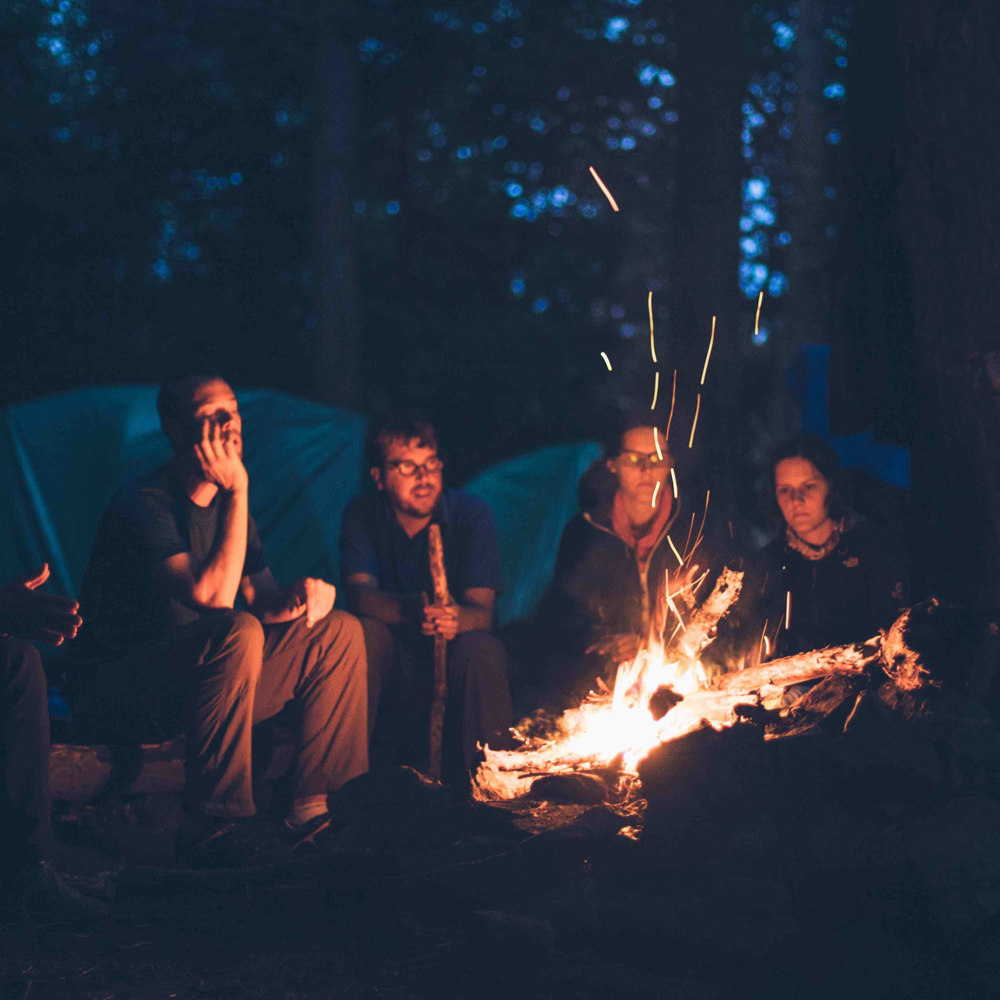

QUI SOMMES
NOUS ?

NOTRE
EQUIPE


NOS
DATES

Le spectacle se déroule en 850, en Norvège chez les Vikings. Le personnage principal Olaf avec ses amis a toujours eu le loisir de s’amuser avec le feu. Tous les jours, ils se retrouvaient pour jouer ensemble à manipuler du feu. Puis au fur et à mesure ils commençaient à exceller dans le domaine. Olaf étant fou amoureux d’Astrid, la fille du jarl (prononcer « yarl » est l'équivalent de comte). Il demande alors à ses amis s’ils peuvent l’aider à impressionner Astrid et tout le village avec leur “magie” de feu. Le jarl donnait l’accord aux jeunes amis de faire un spectacle le tout accompagné d’un festin. Olaf met en place ce spectacle avec pour seul objectif d'impressionner Astrid et de lui demander sa main une fois la représentation finie.

Le spectacle se déroule en 850, en Norvège chez les Vikings. Le personnage principal Olaf avec ses amis a toujours eu le loisir de s’amuser avec le feu. Tous les jours, ils se retrouvaient pour jouer ensemble à manipuler du feu. Puis au fur et à mesure ils commençaient à exceller dans le domaine. Olaf étant fou amoureux d’Astrid, la fille du jarl (prononcer « yarl » est l'équivalent de comte). Il demande alors à ses amis s’ils peuvent l’aider à impressionner Astrid et tout le village avec leur “magie” de feu. Le jarl donnait l’accord aux jeunes amis de faire un spectacle le tout accompagné d’un festin. Olaf met en place ce spectacle avec pour seul objectif d'impressionner Astrid et de lui demander sa main une fois la représentation finie.
Le spectacle se déroule en 850, en Norvège chez les Vikings. Le personnage principal Olaf avec ses amis a toujours eu le loisir de s’amuser avec le feu. Tous les jours, ils se retrouvaient pour jouer ensemble à manipuler du feu. Puis au fur et à mesure ils commençaient à exceller dans le domaine. Olaf étant fou amoureux d’Astrid, la fille du jarl (prononcer « yarl » est l'équivalent de comte). Il demande alors à ses amis s’ils peuvent l’aider à impressionner Astrid et tout le village avec leur “magie” de feu. Le jarl donnait l’accord aux jeunes amis de faire un spectacle le tout accompagné d’un festin. Olaf met en place ce spectacle avec pour seul objectif d'impressionner Astrid et de lui demander sa main une fois la représentation finie.